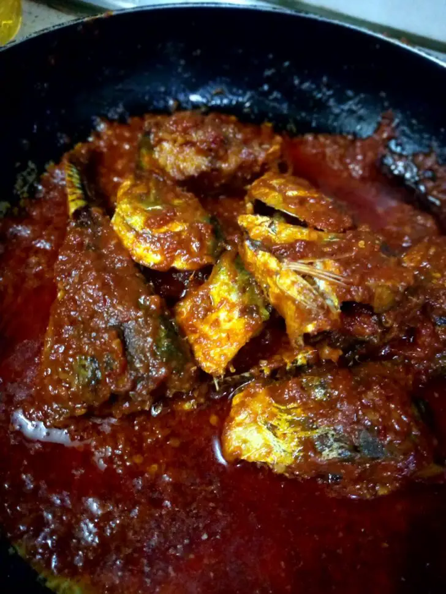

Ikan Cencaru Sambal

Ikan cencaru atau nama lain ikan jaket amat digemari kerana isinya yang tebal apatah lagi bila dimasak sambal, berikut adalah bahan yang diperlukan
Bahan-bahan
- Ikan cencaru 3 ekor (basuh dan potong kepada 3 bahagian)
- Perasakan ikan dengan garam dan kunyit.
- Seperiuk kecil cili kering yang telah direbus hingga kembang.
- Sebiji bawang besar saiz sederhana
- 2 ulas bawang putih
- 1 inci halia
- 1 inci belacan
- Asam jawa setengah genggam,dibancuh dengan air semangkuk kecil.
- Garam 1 ½ sudu kecil
- Serbuk perasa ½ sudu kecil
kaedah
- Goreng ikan tapi jangan terlalu garing. Ketepikan
- Sediakan kuali. Panaskan minyak dalam anggaran sesenduk.
- Tumiskan semua bahan-bahan kisar.
- Goreng dan biarkan cili naik minyak.
- Kemudian masukkan air asam jawa. Biarkan semua serasi, tambahkan air sedikit agar ia tidak terlalu kering
- Tambahkan garam dan serbuk perasa.Masukkan ikan goreng, biarkan seketika. Barulah tutup api, bolehlah dihidangkan.